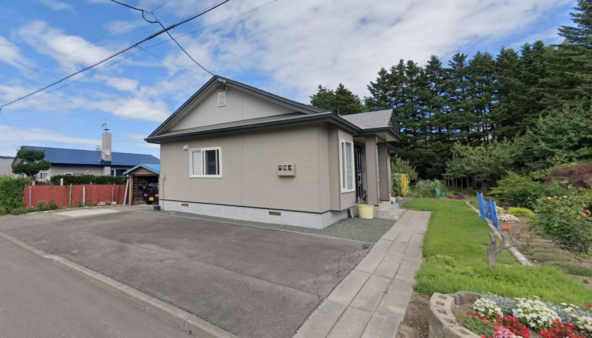
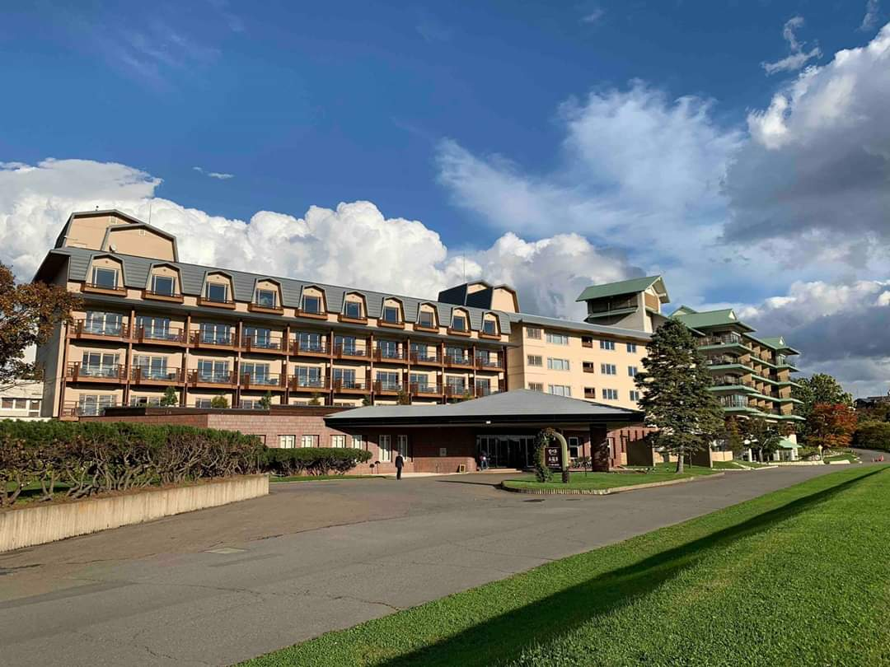
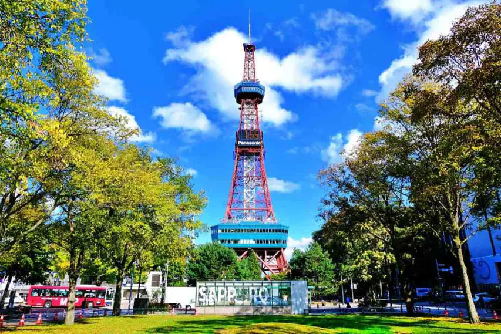

🏨 住宿名冊與 Google Maps 導航連結
【9/29-9/30 札幌】 JR Tower Hotel Nikko Sapporo
🗺️ Google 地圖導航
【9/30-10/2 旭川】 旭川站前超大公寓 Airbnb (鄰近旭川站)
🗺️ Google 地圖導航
【10/2-10/4 清里町】 清里町 全棟包套一軒家 Airbnb (鄰近札弦站)
🗺️ Google 地圖導航
【10/4-10/6 星野】 星野度假村 Tomamu The Tower
🗺️ Google 地圖導航
【10/6-10/8 十勝】 十勝川溫泉第一酒店
🗺️ Google 地圖導航
【10/8-10/10 札幌】 札幌索拉利亞西鐵酒店 (Solaria Nishitetsu Hotel)
🗺️ Google 地圖導航
🗓️ 每日詳細行程與司機指南
9月29日
Day 1：抵達北海道，首晚充分休息
🚘 行程與接機攻略：
- 16:00： 乘 CX580 抵達新千歲機場，下機後快速辦理入境。
- 取車安排： 司機先行前往租車櫃檯拿車，並將車子開回機場接朋友。
- 接機接回： 在國際線大堂接齊朋友後，將車子繞到國際線出發往札幌市區。
- 🍽️ 晚餐安排： 抵達後辦理入住。不作固定限制，在酒店附近或札幌車站地下街按當時心情與朋友的喜好隨心挑選。

9月30日
Day 2：札幌出發 ➔ 旭川動物園 ➔ 入住旭川超大公寓
🚘 行程細節：
- 09:00： 退房並正式開啟自駕旅程！走道央自動車道（高速公路），中途可停靠 砂川綠洲館 稍作拉筋，吃個著名的北菓樓泡芙。
- 中午： 抵達旭川，直接開往 旭山動物園 觀賞經典的企鵝與北極熊，中午可在動物園食堂享用拉麵。
- 16:00 採購： 前往旭川站旁的 AEON 大超市 瘋狂購買高質北海道和牛、海鮮與水果，隨後入住超寬敞的旭川 Airbnb。
- 晚上： 在公寓大廚房下廚辦牛扒海鮮宴，或者步行去旁邊的大雪地啤酒館暢飲當地手工啤及吃燒肉。

10月1日
Day 3：層雲峽黑岳大賞楓 ➔ 回旭川公寓
🚘 行程細節：
- 08:30： 從旭川公寓輕鬆出發前往層雲峽（車程約 1 小時 15 分鐘）。
- 上午： 前往 黑岳纜車站，搭乘纜車直達五合目！10月初正好是黑岳半山腰紅葉最盛期，景色非常壯觀。
- 下午： 駕車遊覽大雪山國立公園內極具氣勢的 銀河瀑布與流星瀑布。下午 4 點前悠閒地開車回旭川，避開黑夜山路。
- 晚上： 回到旭川，可逛逛車站前的平和通買物公園步行街，隨心享用晚餐。

10月2日
Day 4：旭川 ➔ 網走珊瑚草 ➔ 天之大道 ➔ 入住清里町全棟別墅
🚘 行程細節：
- 09:00： 公寓退房，開啟道東曠野之旅。中途停靠新開的現代化公路休息站 道之驛 遠輕 拍照並享受免費足湯。
- 中午： 抵達網走享用鮮美海鮮丼，隨後開往 能取湖珊瑚草群落 欣賞震撼的秋季限定紅色地毯。
- 下午： 沿海岸線開往知床方向，途中在神級打卡點 天之大道 (Road to Heaven) 拍下直通天際的筆直絕景照。
- 16:30 前： 順利 Check-in 位於清里町的 豪華包棟大別墅。別墅前可免費泊兩部車。晚上抬頭即可看見毫無光害的滿天星空。

10月3日
Day 5：世界自然遺產深度遊 (上午搭船 ➔ 下午五湖/秘境)
🚘 行程細節：
- 08:30： 從清里町別墅開車出發前往宇登呂港口碼頭（車程約 1小時15分），需提早半小時換票準備。
- 【更新】10:00： 準時搭乘 知床觀光船 起航！從海上觀賞壯麗的自然遺產斷崖、瀑布，並尋找野生棕熊。
- 中午： 在宇登呂港享用極上海鮮午餐。
- 下午： 前往開車只需 20 分鐘的 知床五湖 輕鬆走高架木道，遠眺知床連山。回程順路探訪大自然夢幻秘境 神之子池 觀賞寶藍色池水。

10月4日
Day 6：清里町別墅 ➔ 摩周湖 ➔ 進駐星野度假村
🚘 行程細節：
- 09:30： 別墅退房，開車 45 分鐘前往造訪神秘的火山口湖── 摩周湖第一展望台。
- 中午： 隨後開啟長途自駕移動模式（經美幌峠或阿寒湖，總車程約 3.5 小時）。
- 15:00： 準時抵達 星野度假村 辦理 Check-in。晚上漫步唯美的 水之教堂，並預約在巨大的針葉林窗景下的「森林餐廳 (Nininupuri)」享用豐盛的自助大餐。

10月5日
Day 7：清晨挑戰雲海、度假村慢活設施
🚘 行程細節：
- 04:15 清晨： 搭乘度假村纜車直達 雲海平台 挑戰看壯麗秋季雲海！（清晨山上接近 0°C，務必帶備防風羽絨及保暖水壺）。
- 日間： 回房補眠後。午後一同前往全日本最大的室內人造浪池 微笑海灘 (Mina-Mina Beach) 玩水消遣，或在露天 木林之湯 泡湯徹底放鬆。
- 晚上： 在度假村內的「螢火蟲街 (Hotalu Street)」挑選喜愛的日式居酒屋或特色餐廳享受悠閒夜晚。

10月6日
Day 8：星野 ➔ 帶廣浪漫約會 ➔ 十勝川溫泉
🚘 行程細節：
- 10:00： 辦理退房，輕鬆駕車往帶廣（僅需 1 小時車程，路寬極好開）。
- 中午美食： 直奔帶廣市區去吃全日本第一名的 元祖豚丼 ぱんちょう。
- 下午： 前往拍情侶/夫婦必去的最浪漫打卡位 幸福車站 與愛國車站。
- 傍晚： Check-in 頂級的十勝川溫泉第一酒店。體驗世界極罕有、具備天然保濕成分的金黃色植物性「Moor溫泉（美人湯）」，晚上享用奢華的十勝和牛創作會席料理。

10月7日
Day 9：十勝高原牧場與甜點大暴走
🚘 行程細節：
- 上午： 駕車前往全日本最宏偉的 Naitai 高原牧場，在山頂全玻璃展望台（Naitai Highland Lodge）一邊一邊吃超濃郁牛乳雪糕，一邊眺望無邊際的地平線。
- 下午： 回到帶廣市區，前往甜點聖地 六花亭西三條店 享用全日本只有兩家店才吃得到的限定酥脆派，隨後可去「真鍋庭園」散步拍絕美秋色。
- 晚上： 回到酒店，再次享受私人露天溫泉與第二晚的高級一泊二食晚餐。

10月8日
Day 10：札幌 ➔ 集中火力大 Shopping
🚘 行程與購物爆買流：
- 09:30： 由帶廣開回札幌（車程約 2.5 - 3 小時）。
- 【更新】13:00 抵達： 抵達新開幕的 Solaria 西鐵酒店，先到前台放低大件行李。車子今晚先不提早還，直接停進酒店停車場，方便你晚上買完大包小包直接放進車尾箱！
- 14:00 - 18:00 (大丸百貨)： 步行 3 分鐘直接殺去火車站上蓋的 大丸百貨 / JR Tower，集中火力狂掃名牌、歐美日系化妝品與服飾。買完隨時提回酒店放低，極不累人。
- 18:30 - 22:00 (狸小路)： 走路或搭一站地鐵前往 狸小路商店街 及 24小時營業的驚安殿堂，一次過把所有藥妝、零食戰利品掃清光。

10月9日
Day 11：札幌 ➔ 冇行程，按當天喜好，晚上食Omakase
🚘 行程與購物爆買流：
- 10:00： 按當天心情喜好決定行程。
- 18:30： 食Omakase。

10月10日
Day 12：開車直奔機場 ➔ 12:00 準時還車 ➔ 回港
🚘 行程與最完美的終極還車流程：
- 10:30： 在酒店悠閒享用完早餐後 Check-out。將所有大行李箱搬上車，直接開車前往新千歲機場（車程 1 小時）。
- 12:00 前還車： 開車前往機場附近的租車營業所，**在 12:00pm 前準時完成還車**。辦妥後搭乘租車公司的免費接駁車返回機場航廈。
- 機場最後衝刺： 辦理完登機寄艙行李後，所有人check-in，最後shopping，一次過買齊六花亭、LeTAO、白色戀人等所有送禮手信。
- 14:00： 送別朋友
- 16:00： 登上 CX581 航班，滿載珍貴回憶返回香港。